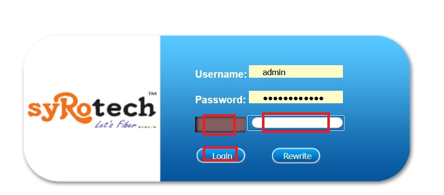
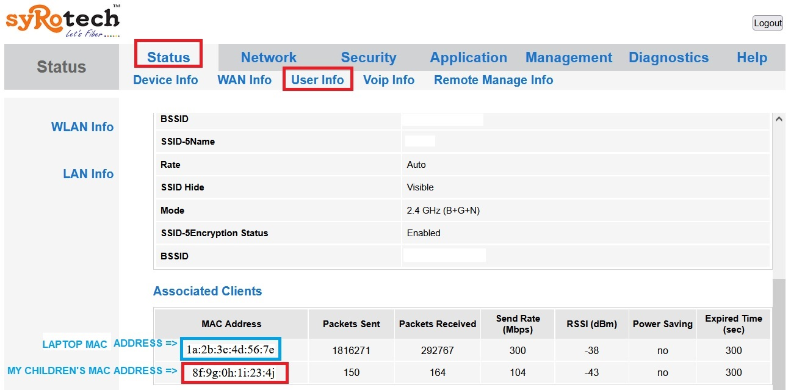
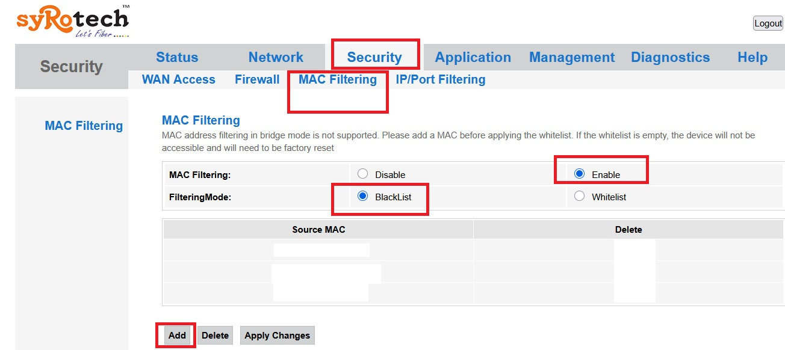

01. I have stopped using d2h from 2020 IST
at my house for my daughter's & son's exam
02. Started using BSNL fibernet post paid from 2023 IST
When my daughter & son need network, I used to share my bsnl post paid to them maximum 45 minutes per day/the day when they are asking me.
|
Purpose: I always block Internet for my daughter & son at my bsnl.
Access is granted only when requested and allowed strictly for 45 minutes per day/week as per their requirement.
|
|
Step 01: One-Time Permanent Block Setup
|
01. Login to router:
https://192.168.1.1
|
After providing:
a) Username: admin
b) Password: your password
c) Enter automated code
d) Click login
|

|
|
a) Click Status at main menu
b) Click User Info
View MAC Address
My laptop was connected to BSNL fibernet.
My child's mobile was connected to WIFI.
c) I have noted down the MAC address of my child.
|

|
|
04. At main menu click Security.
From there click MAC Filtering at sub menus.
05. Select Mode: Blacklist
06. I have added 8f:9g:0h:1i:23:4j to block my children's mobile device.
07. Click Apply Changes
08. Clear all history at firefox/related browser.
09. Close the browser
10. Clear all files at %TEMP% directory.
|

|
|
|
Step 2: STEPS TO Grant Internet to childrens for 45 minutes.
|
|
01. Login to router: https://192.168.1.1
|
02. Click Security at main menu
Click MAC Filtering at sub menu
|
|
03. Remove child's device MAC from the Blacklist |
4. Click
Apply
|
5. Start a
1-hour timer for internet access
|
|
Step 3: Re-block After 45 minutes.
|
|
1. Login to router again |
2. Go to Security
Click MAC Filtering
|
|
03. Add daughter's & son's device MAC back to the Blacklist
|
|
4. Click Apply
|